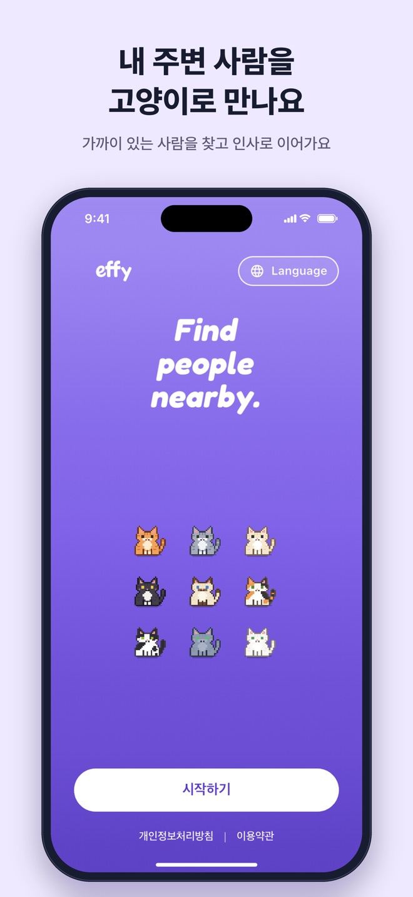
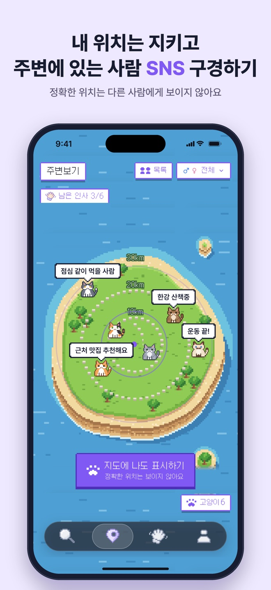
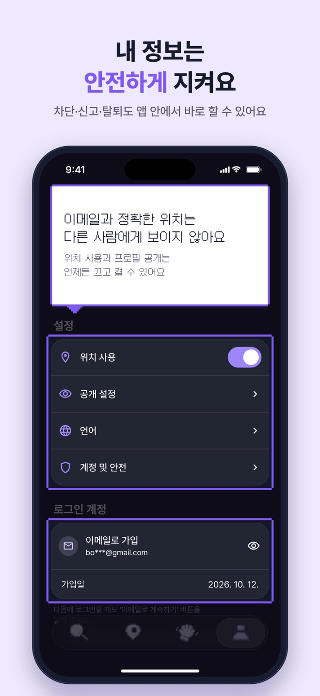

기능 소개
화면으로 보는
에피
발견하고, 인사하고, 대화로 이어지기까지. 앱의 실제 화면과 함께 기능을 소개해요.

시작하기
원하는 방법으로 가볍게 시작해요.
Apple, 카카오, Google, 이메일 중 편한 방법으로 가입해요. 가입은 한 화면에 질문 하나씩 차근차근 진행되고, 네 가지 약속을 함께 지키기로 해요. 만 19세 이상만 이용할 수 있고, 새로 가입하면 처음 여는 화면마다 짧은 안내가 버튼을 하나씩 알려줘요.

둘러보기
공원을 둘러보며 만나요.
공개 프로필이 공원 지도에 고양이로 모여 있어요. 최근에 가입했거나 말풍선을 바꾼 사람이 먼저, 나머지는 매일 새 순서로 나와요. 지도에는 한 번에 최대 50명, 목록에서는 한 사람씩 큰 카드로 이어서 볼 수 있어요. 지도 아래 입력칸에서 내 말풍선을 바로 바꾸고, 위치를 켜지 않아도 볼 수 있어요.

프로필 · 인사하기
사진과 말풍선으로 먼저 알아봐요.
위에서 아래로 이어지는 사진, 고양이 머리 위 말풍선, 자기소개, 관심사로 상대를 알아보고, 마음에 들면 인사하기를 눌러요. 인사는 하루 3번, 짧은 광고를 끝까지 보면 하루 3번까지 더 보낼 수 있어요. Instagram 아이디를 누르면 바로 이동해요.

주변 · 고양이 지도
지도에 나도 잠깐 표시해요.
‘지도에 나도 표시하기’로 올리면 3시간 동안 30km 안의 이용자 지도에 내 고양이가 나타나요. 정확한 위치 대신 10·20·30km 거리 구간으로만 보이고, 따로 동의한 경우에만 올라가며, 언제든 직접 내릴 수 있어요. 새로 체크인한 사람이 있으면 주변 탭에 빨간 점이 켜져요.

인사 탭
서로 인사하면 오픈채팅으로.
받은 인사를 한 장씩 보고 바로 답할 수 있어요. 서로 인사한 사람이 카카오톡 오픈채팅을 등록했다면 바로 대화를 시작해요. 오픈채팅 링크는 서로 인사한 사람에게만 보여요.

내 프로필
보여줄 것은 내가 정해요.
Instagram, 오픈채팅 링크, 사진을 직접 관리하고, 위치 사용·프로필 공개·언어를 언제든 바꿀 수 있어요. 어떤 방법으로 가입했는지도 여기서 확인해요. 위치 사용을 끄면 체크인과 위치 이용 기록이 바로 삭제돼요.
가까운 곳부터, 가볍게.
더 궁금한 점은 자주 묻는 질문에서 확인하세요.